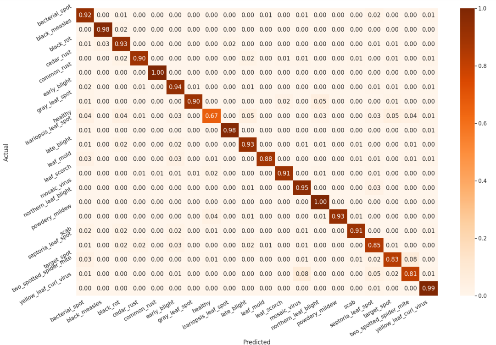

About the Model
Redes Neurais Convolucionais (CNN) são um tipo de algoritmo usado para detecção e classificação de recursos. Eles são particularmente eficazes para analisar dados espaciais, como imagens. As CNNs empregam camadas convolucionais para extrair características proeminentes das imagens, seguidas de agrupamento para comprimir o mapa de características e evitar o overfitting. Essas etapas podem ser repetidas várias vezes para melhorar o desempenho do modelo. A saída é nivelada e processada por meio de redes neurais totalmente conectadas. As CNNs têm várias aplicações, incluindo a detecção e classificação de infecções de plantas com base em imagens de folhas.
Uma matriz de confusão foi criada para avaliar o desempenho do modelo. A matriz revela que o modelo apresenta excelentes capacidades preditivas com alta precisão. O forte padrão diagonal na matriz indica que a maioria dos rótulos foi prevista corretamente. Isso confirma a eficácia do modelo em identificar e classificar com precisão os dados.
